How Docgrity works
A real walkthrough on a live Confluence site — from a full scan to owners being notified. Nothing is edited or archived without a human clicking "Yes, do it".
1Run a scan
Open Docgrity from the Confluence Apps menu and hit Run full scan. The agent reads your pages (using your own AI provider key), compares claims across pages and produces open findings grouped by type and severity. Here: 33 findings — 13 duplicates, 7 contradictions and 13 open questions.

2Review every finding — with evidence
Each finding shows its severity, confidence, the potential owner (inferred from edit history, never asserted) and a recommended action — review, merge or ignore. Filter by severity to triage the critical ones first.
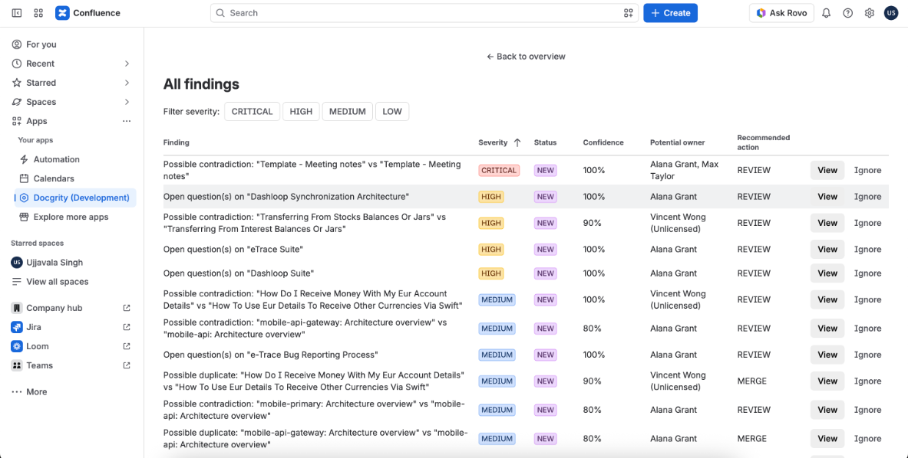
Two templates record decisions differently
Docgrity flagged a critical contradiction: two "Meeting notes" templates record decisions with different decision IDs. It quotes the exact conflicting claims from both pages, side by side.
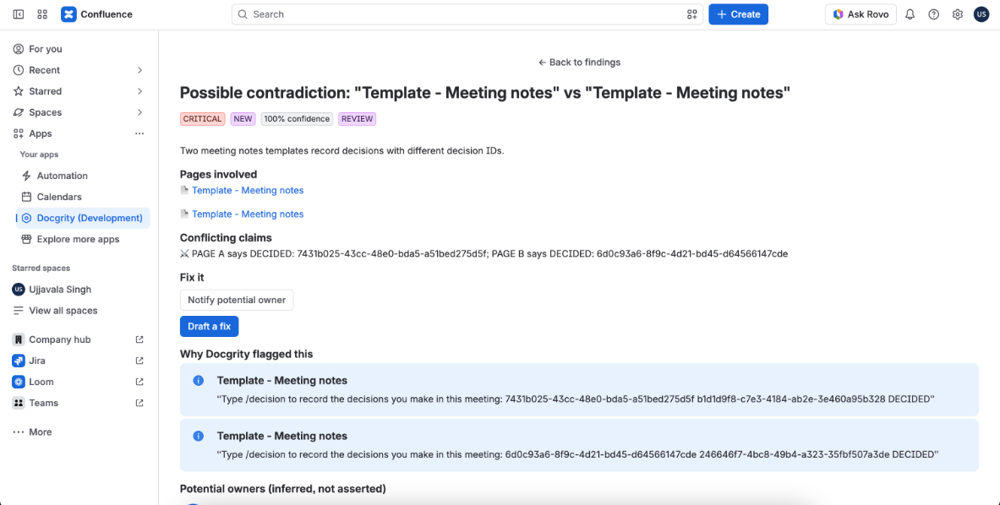
Choose Notify potential owner. Docgrity always confirms before acting — no silent changes, ever.
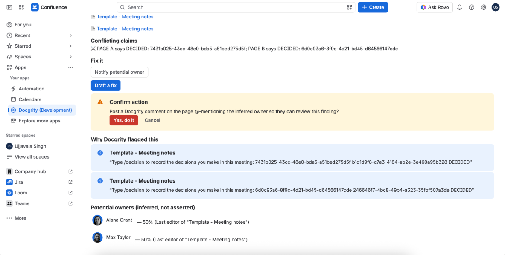
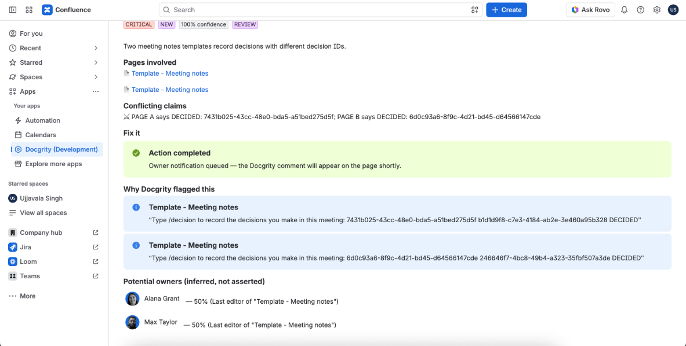
Docgrity posts a comment on the actual page, explaining the conflict in plain language and @-mentioning the potential owners so they can resolve it.
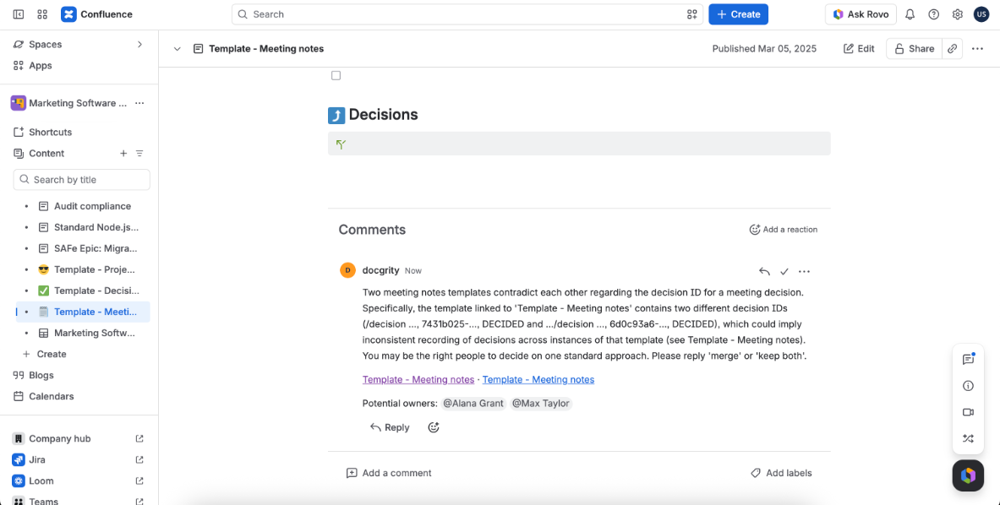
Two pages saying the same thing
Two "Getting started in Confluence" pages have near-identical content. Docgrity quotes the matching passages from both pages and suggests which one to keep.
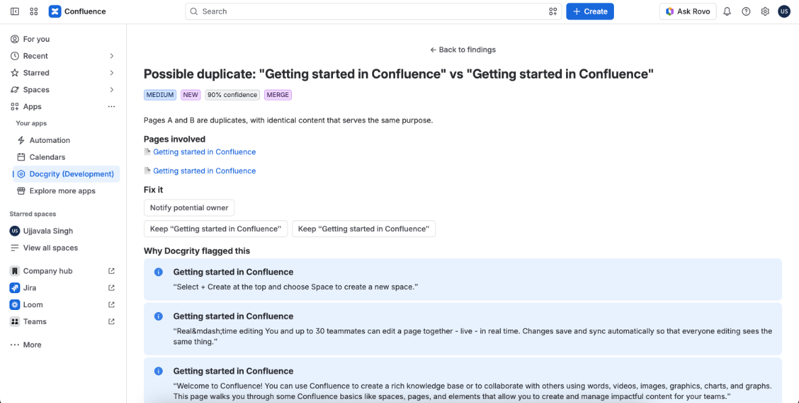
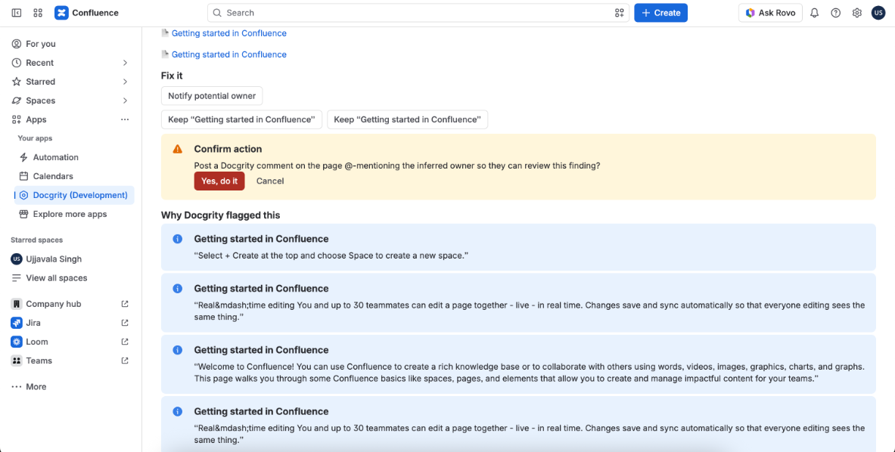
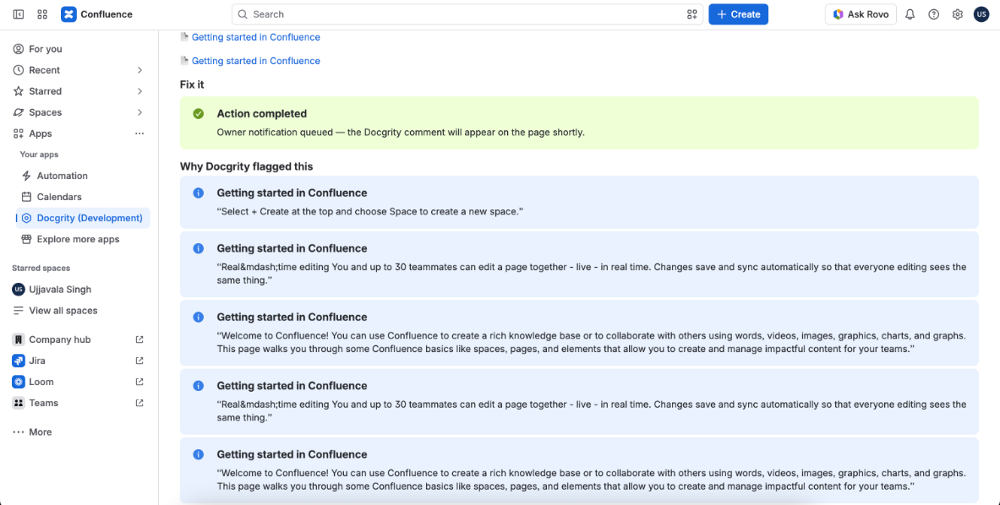
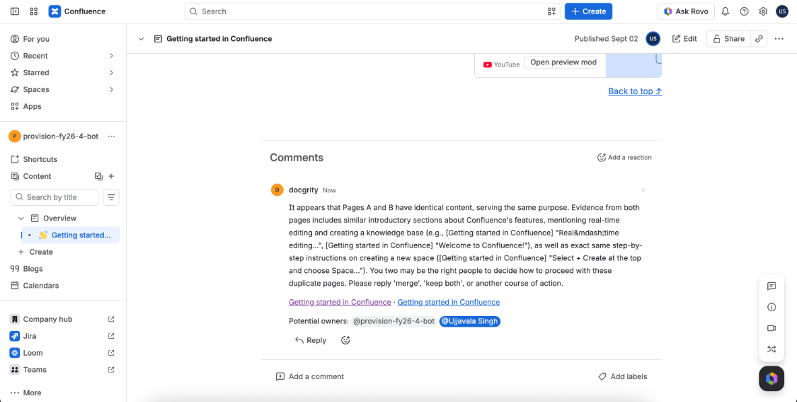
Questions nobody ever answered
Docgrity also finds open questions — unanswered questions and unresolved TODOs living inside pages. Each one is ranked by severity with the exact excerpt it came from.
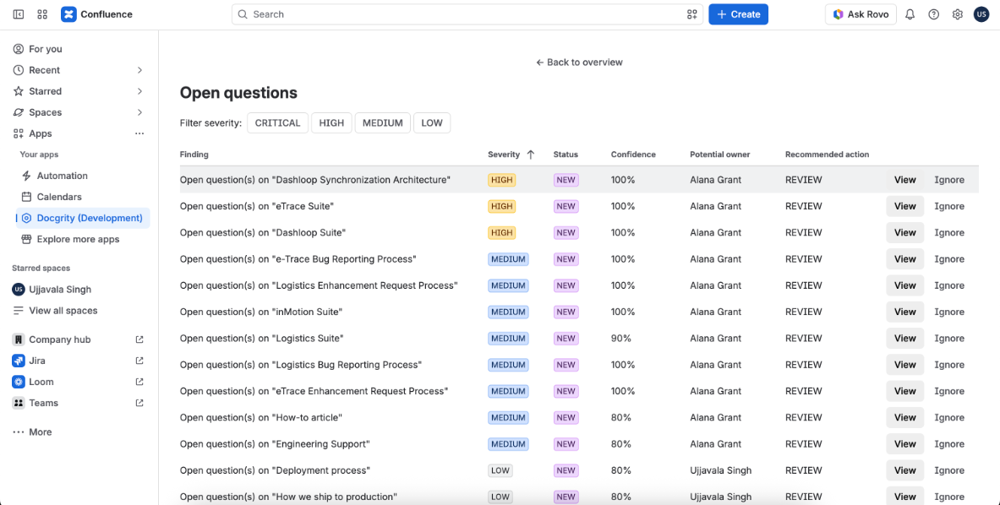
Opening one shows the unresolved question, the page it lives on, and the passage that raised it — here, "When will database migrations run?" from the Deployment process page.
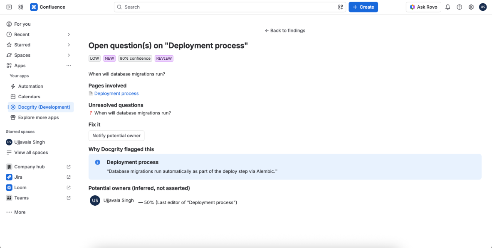
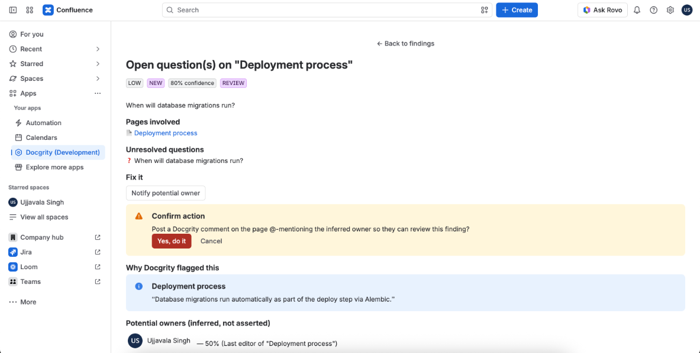
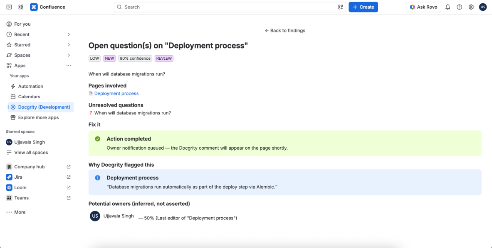
The comment Docgrity posts asks a specific, answerable question — the owner can close it out with a one-line reply.
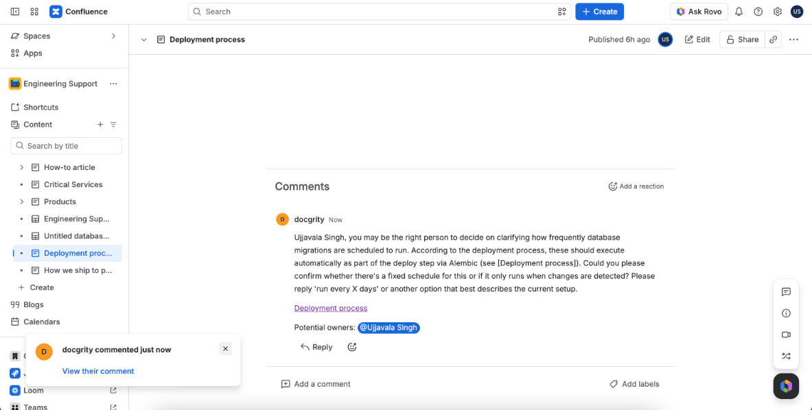
3Owners get notified where they already are
Because Docgrity uses native Confluence comments and @-mentions, owners see findings in their normal Confluence notifications — no new tool to check.
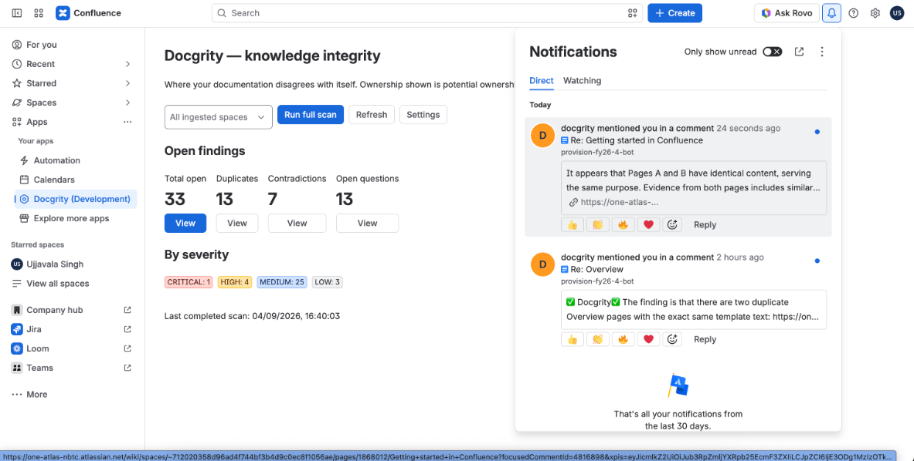